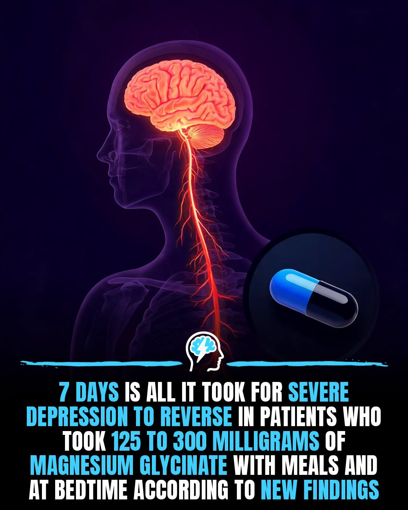

It’s a really fascinating result. Depression is a major risk factor for CVD. The idea that something so simple and safe could make such a big difference is intriguing.
It is important to point out that this was a case series, with no control group. Not a randomized trial. It is also pretty old now, published in 2006. Still, it might be worth a try.
Link to journal paper:
PaperScienceDirect articlesciencedirect.com
Media coverage:
prorithm.comStudy shows taking magnesium leads to rapid recovery from major depression taking less than daysprorithm.com
#magnesiumHD #depressionHD
🧠 A Breakthrough in Mental Wellness
The potential for a common mineral to shift mental health has gained attention following observations of rapid recovery from severe depression. Clinical case studies show that individuals suffering from major depressive disorders experienced a complete reversal of symptoms in less than a week. This timeline occurred when patients supplemented their diets with specific doses of magnesium glycinate. By taking between 125 and 300 milligrams of this compound with every meal and again before sleep, many reported a lifting of the heavy fog associated with chronic low mood.
🔬 Understanding the Nutritional Link
The relationship between magnesium and brain function is rooted in how the mineral interacts with neuronal pathways. It plays a critical role in regulating the central nervous system and influencing the synapses that manage mood. When magnesium levels are insufficient, it can lead to various neurological issues. The use of the glycinate form is notable because it is highly absorbable and less likely to cause digestive upset than other varieties. This efficiency allows the mineral to reach the brain more effectively, supporting the biological processes necessary for emotional stability.
💡 Improvements in Health
The benefits of this specific magnesium protocol extended beyond just mood stabilization. Participants in these observations noted improvements in several related areas that often accompany depression.
- Anxiety and panic attacks subsided quickly.
- Sleep quality improved as insomnia was reduced.
- Short term memory and concentration became sharper.
- Physical cravings for substances like nicotine or cocaine decreased.
These improvements suggest that addressing a simple nutritional deficiency might resolve complex psychological symptoms that are often treated with traditional medication.
🛡️ The Modern Context of Mineral Deficiency
Historically, the human diet was much richer in magnesium, but modern food processing has stripped this nutrient from our daily intake. High fructose corn syrup, refined flours, and soil depletion have contributed to a widespread lack of magnesium in the general population. This deficiency is often worsened by stress, which further depletes body reserves. By reintroducing these levels through concentrated supplementation, it is possible to restore the chemical balance required for a healthy mind.
Facts checked by @powermindset
Sources:
Medical Hypotheses: Rapid recovery from major depression using magnesium treatment
Journal of the American Board of Family Medicine: Association between magnesium intake and depression
Nutrients Journal: The Role of Magnesium in Neurological Disorders
#powermindset #mentalhealth #magnesium #wellness #nutrition
